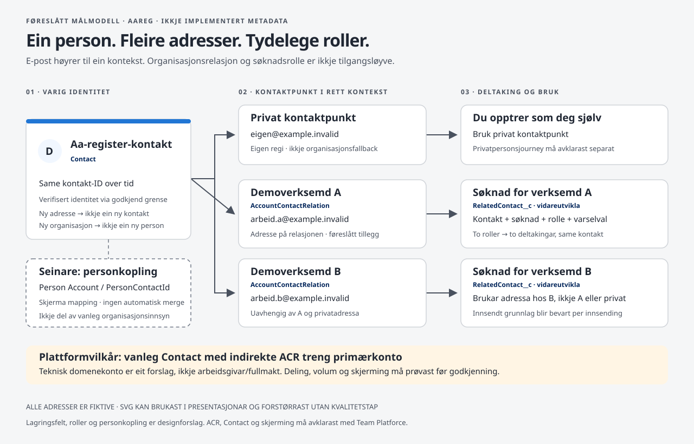

Person og profil
Varig kontaktidentitet og eigne kontaktpunkt. Privatadressa blir brukt i eigen regi, ikkje automatisk for arbeidsgivaren.
Ein profilendring endrar ikkje innlogging eller Person Account.
Designillustrasjon · forslag til menneskeleg vurdering
Ikkje ein ny kontakt for kvar e-post eller arbeidsgivar. Éin varig kontakt, eigne organisasjonsrelasjonar og eksplisitte roller i kvar søknad. Desse illustrasjonane viser målmodellen, ikkje dagens implementasjon.

Varig kontaktidentitet og eigne kontaktpunkt. Privatadressa blir brukt i eigen regi, ikkje automatisk for arbeidsgivaren.
Ein profilendring endrar ikkje innlogging eller Person Account.
ACR knyter kontakten til kvar organisasjon. Adressa hos A kan vere ulik både B og privatadressa.
Kontekstadresse er eit føreslått tillegg; felt, eigarskap og deling må avklarast.
Kontakt + søknad + rolle. Same person kan ha fleire roller utan å bli oppretta på nytt.
Vidareutvikle RelatedContact. Rolle og varselval er ikkje fullmakt.
Manglar adresse i konteksten? Stopp og be om rett kontaktpunkt. Ikkje bruk privatadressa eller adressa hos ein annan organisasjon som stille fallback.
Ved innsending
Kontakt, rolle, kontekstadresse og varselval blir bevarte i innsendingsgrunnlaget. Ny innsending får eit nytt grunnlag. Arkivretry brukar den rette historiske versjonen.
Ved neste melding
Nye meldingar brukar aktuell adresse i rett kontekst. Ei adresseendring hos A påverkar ikkje B eller privat. Rettar og skjerming må også kontrollerast på nytt.
Dette er ein illustrasjon av krav, ikkje bevis på implementert tilgangskontroll. Teknisk primærkonto, faktisk deling, ekstern lisens og skjerming må prøvast før modellen blir vedteken.